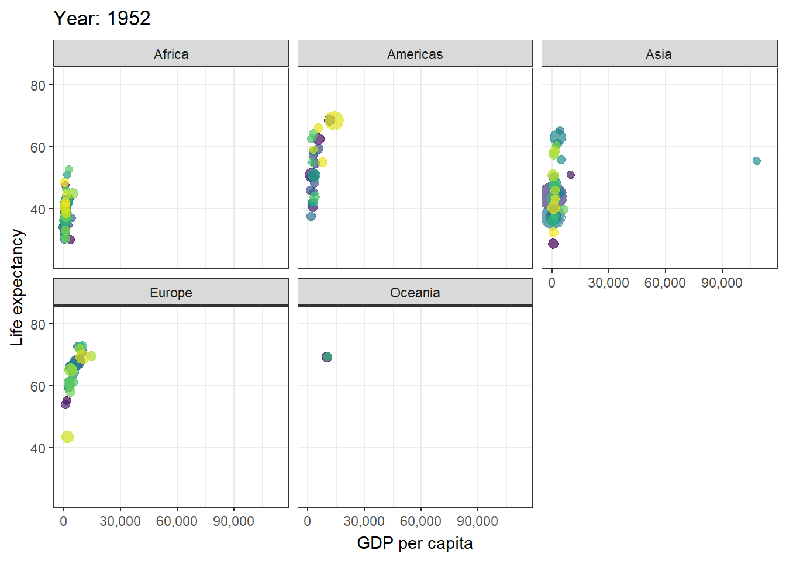
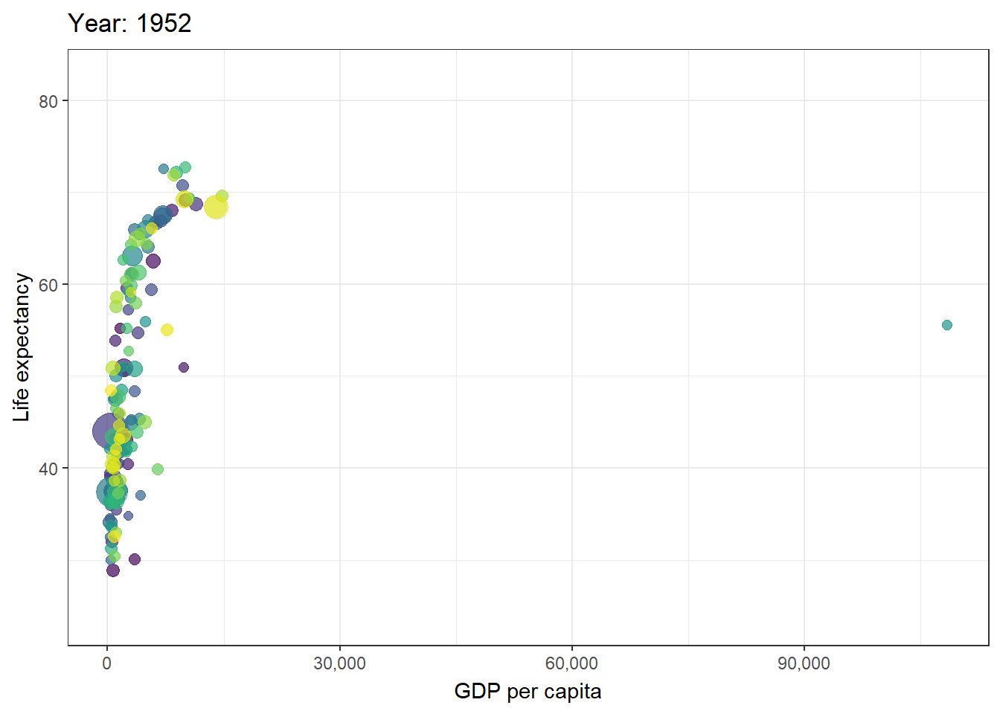
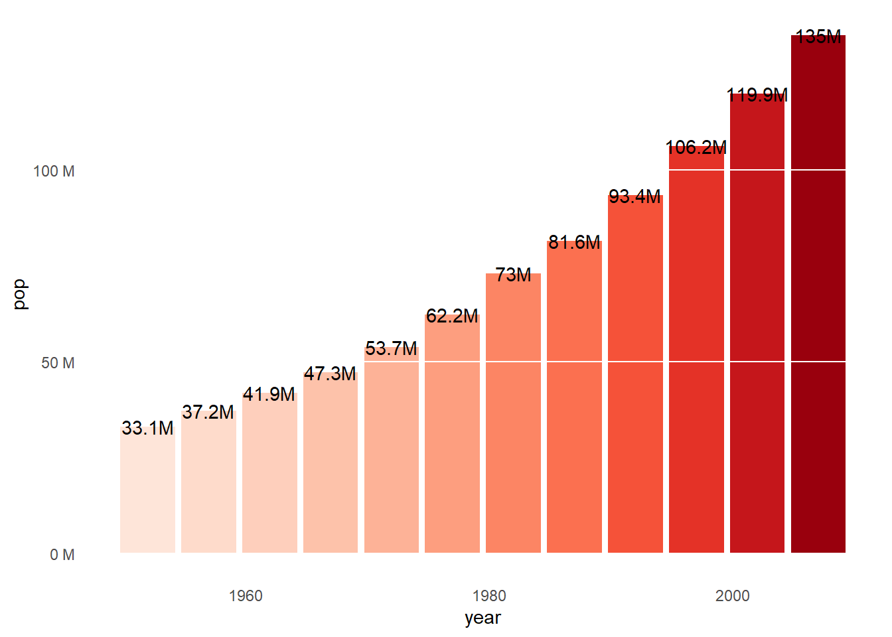
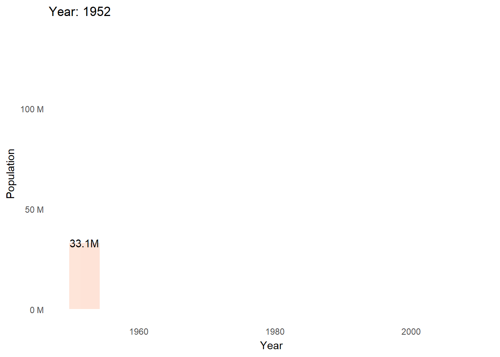

Code
install.packages("gganimate")Olumide Oyalola
January 26, 2023
Static visualizations that are publication ready are readily available in R using the ggplot2 package. However, there are times where it’s required to illustrate the change in an event overtime. This is a particular use case of the gganimate package in R which is an extension of the ggplot2 package for creating animated ggplots.
It provides a range of functionalities that can be added to the plot object in order to customize how it should change with time.
The gganimate package is available on CRAN and it can be installed by running the code chunk below from the Rstudio console.
install.packages("gganimate")The gapminder dataset in R is an excerpt of the Gapminder data on life expectancy, GDP per capita, and population by country.
The gapminder package is available on CRAN and it can be installed by running the code chunk below from the Rstudio console.
install.packages("gapminder")if(!require(pacman)) install.packages("pacman")Loading required package: pacmanpacman::p_load(
tidyverse,
gganimate,
gapminder
)
theme_set(theme_bw())data(gapminder)gapminder dataset, below is the structure of the dataset which includes the variables and sample data.glimpse(gapminder)Rows: 1,704
Columns: 6
$ country <fct> "Afghanistan", "Afghanistan", "Afghanistan", "Afghanistan", …
$ continent <fct> Asia, Asia, Asia, Asia, Asia, Asia, Asia, Asia, Asia, Asia, …
$ year <int> 1952, 1957, 1962, 1967, 1972, 1977, 1982, 1987, 1992, 1997, …
$ lifeExp <dbl> 28.801, 30.332, 31.997, 34.020, 36.088, 38.438, 39.854, 40.8…
$ pop <int> 8425333, 9240934, 10267083, 11537966, 13079460, 14880372, 12…
$ gdpPercap <dbl> 779.4453, 820.8530, 853.1007, 836.1971, 739.9811, 786.1134, …Key R function: transition_time().
Label variables: frame_time.
p + transition_time(year) +
labs(title = "Year: {frame_time}")Create facets by continent:
p + facet_wrap(~continent) +
transition_time(year) +
labs(title = "Year: {frame_time}")
Let the view follow the data in each frame
p + transition_time(year) +
labs(title = "Year: {frame_time}") +
view_follow(fixed_y = TRUE)
pop_ng <- gapminder %>%
filter(country == "Nigeria") %>%
ggplot(aes(x = year, y = pop, fill = pop)) +
geom_bar(stat = "identity", show.legend = FALSE) +
scale_fill_distiller(palette = "Reds", direction = 1) +
theme_minimal() +
theme(
panel.grid = element_blank(),
panel.grid.major.y = element_line(color = "white"),
panel.ontop = TRUE
) +
scale_y_continuous(labels = scales::unit_format(unit = "M", scale = 1e-6)) +
geom_text(aes(label = paste0(round(pop/1000000,1), "M")))
pop_ng
pop_ng + transition_time(year) +
shadow_mark() +
labs(x = "Year",
y = "Population",
title = "Year: {frame_time}")
If you need to save the animation for later use you can use the anim_save() function.